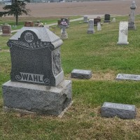

Lovise og Håkon sin slekt og familie
Lovise f. Eggan og Håkon Wahl
Personside 133
Ole Pettersen
M, #3301, f. 7 september 1890, d. 30 januar 1959
Foreldre
| Far | Johan Edvard Petersen (f. 30 januar 1848, d. 18 desember 1904) |
| Mor | Anna Gjertine Pedersdatter (f. 30 september 1848, d. 11 mai 1920) |
Familie 1: Borghild Petrine Jørgensdatter Mulstad (f. 29 april 1894, d. 11 juni 1927)
| Sønn | Einar Pettersen+ (f. 28 juni 1917, d. 27 august 2006) |
| Sønn | Johannes Pettersen+ (f. 14 mai 1919, d. 2 april 2003) |
| Datter | Åse Pettersen+ (f. 27 juni 1922, d. 18 mars 2010) |
| Datter | Elsa Pettersen (f. 2 mars 1924, d. 25 april 2014) |
| Sønn | Birger Pettersen+ |
Familie 2: Anna Johanne Johansen (f. 5 oktober 1899, d. 10 november 1981)
| Datter | Alvhild Pettersen+ (f. 7 juni 1939, d. 15 januar 2020) |
Biografi
Ole Pettersen ble født den 7 september 1890 på/i Horvereid; Kolvereid, Nærøy, Nord-Trøndelag. Han giftet seg med Borghild Petrine Jørgensdatter Mulstad i 1916. Han giftet seg med Anna Johanne Johansen etter 1927. Han døde den 30 januar 1959 på/i Mulstadlien 30/5, Mulstad; Kolvereid, Nærøy, Nord-Trøndelag. Han ble gravlagt den 7 februar 1959 på/i Kolvereid kirkegård, Nærøy, Nord-Trøndelag.
Ole Pettersen was also known as Ole Dalan. Ole Dalan, som han ble kalt, var bygdehåndverker av det gode gamle slaget, stadig opptatt med murer- og snekkerarbeid. Alle skulle ha Ole Dalan når hus skulle bygges, og vi må unnskylde han at han kom til å love for mye når folk ikke hørte "nei". I stor ærbødighet tar vi med en replikk fra en kjent håndverker på Kolveeid som fikk klagemål og refs fordi han sjøl var blitt "lygar"; ja, den største, vart det sagt. -"Dæm sei han Ole Dalan ska vera verr'". Han eide i 1924 Tømmervikenget 26/8, Horvereid; Kolvereid, Nærøy, Nord-Trøndelag.
| Sist redigert | 29 desember 2010 00:00:00 |
| Slektskap | 3-menning 2 ganger forskjøvet til Håkon Wahl |
Kristine Marie Pettersen
K, #3302, f. 3 juli 1896
Foreldre
| Far | Johan Edvard Petersen (f. 30 januar 1848, d. 18 desember 1904) |
| Mor | Anna Gjertine Pedersdatter (f. 30 september 1848, d. 11 mai 1920) |
Biografi
Kristine Marie Pettersen ble født den 3 juli 1896 på/i Horvereid; Kolvereid, Nærøy, Nord-Trøndelag. Hun giftet seg med Otto Linrud.
Kristine Marie Pettersen was also known as Kristine Marie Linrud. Hun bodde på/i Lillehammer, Oppland.
| Sist redigert | 29 desember 2010 00:00:00 |
| Slektskap | 3-menning 2 ganger forskjøvet til Håkon Wahl |
Borghild Petrine Jørgensdatter Mulstad
K, #3303, f. 29 april 1894, d. 11 juni 1927
Foreldre
| Far | Jørgen Eilert Olsen (f. 30 april 1856, d. 8 november 1941) |
| Mor | Elen Marie Andreasdatter Haranes (f. 22 juli 1865, d. 15 juni 1952) |
Familie: Ole Pettersen (f. 7 september 1890, d. 30 januar 1959)
| Sønn | Einar Pettersen+ (f. 28 juni 1917, d. 27 august 2006) |
| Sønn | Johannes Pettersen+ (f. 14 mai 1919, d. 2 april 2003) |
| Datter | Åse Pettersen+ (f. 27 juni 1922, d. 18 mars 2010) |
| Datter | Elsa Pettersen (f. 2 mars 1924, d. 25 april 2014) |
| Sønn | Birger Pettersen+ |
Biografi
Borghild Petrine Jørgensdatter Mulstad ble født den 29 april 1894 på/i Mulstad; Kolvereid, Nærøy, Nord-Trøndelag. Hun giftet seg med Ole Pettersen i 1916. Hun døde av blodpropp den 11 juni 1927 på/i Nærøy, Nord-Trøndelag. Hun ble gravlagt den 22 juni 1927 på/i Kolvereid kirkegård, Nærøy, Nord-Trøndelag.
Borghild Petrine Jørgensdatter Mulstad was also known as Borghild Petrine Pettersen.
| Sist redigert | 14 juli 2022 23:46:02 |
| Slektskap | 5-menning 2 ganger forskjøvet til Håkon Wahl |
Hartvig Petersen
M, #3304, f. 25 februar 1850
Foreldre
| Far | Peter Thomas Jonsen (f. 21 juni 1819, d. 2 oktober 1889) |
| Mor | Anne Regine Haldorsdatter Mæhlum (f. 9 oktober 1821, d. 20 august 1902) |
Biografi
Hartvig Petersen ble født den 25 februar 1850 på/i Horvereid; Kolvereid, Nærøy, Nord-Trøndelag. Han døde som barn på/i Horvereid; Kolvereid, Nærøy, Nord-Trøndelag.
| Sist redigert | 16 juli 2022 21:25:03 |
| Slektskap | Søskenbarn 3 ganger forskjøvet til Håkon Wahl |
Kristine Rebekka Petersdatter
K, #3305, f. 26 mars 1851, d. 26 august 1852
Foreldre
| Far | Peter Thomas Jonsen (f. 21 juni 1819, d. 2 oktober 1889) |
| Mor | Anne Regine Haldorsdatter Mæhlum (f. 9 oktober 1821, d. 20 august 1902) |
Biografi
Kristine Rebekka Petersdatter ble født den 26 mars 1851 på/i Horvereid; Kolvereid, Nærøy, Nord-Trøndelag. Hun døde den 26 august 1852 på/i Horvereid; Kolvereid, Nærøy, Nord-Trøndelag.
| Sist redigert | 29 desember 2010 00:00:00 |
| Slektskap | Søskenbarn 3 ganger forskjøvet til Håkon Wahl |
Kristian Magnus Petersen
M, #3306, f. 7 august 1853, d. omtrent 1856
Foreldre
| Far | Peter Thomas Jonsen (f. 21 juni 1819, d. 2 oktober 1889) |
| Mor | Anne Regine Haldorsdatter Mæhlum (f. 9 oktober 1821, d. 20 august 1902) |
Biografi
Kristian Magnus Petersen ble født den 7 august 1853 på/i Horvereid; Kolvereid, Nærøy, Nord-Trøndelag. Han døde omtrent 1856 på/i Horvereid; Kolvereid, Nærøy, Nord-Trøndelag.
| Sist redigert | 29 desember 2010 00:00:00 |
| Slektskap | Søskenbarn 3 ganger forskjøvet til Håkon Wahl |
Anne Pauline Petersdatter Horvereid
K, #3307, f. 7 juni 1856, d. før 1937
Foreldre
| Far | Peter Thomas Jonsen (f. 21 juni 1819, d. 2 oktober 1889) |
| Mor | Anne Regine Haldorsdatter Mæhlum (f. 9 oktober 1821, d. 20 august 1902) |
Familie 1: Edvard Olaus Olsen Volden (f. 31 mai 1847, d. 14 februar 1926)
| Datter | Dina Edvardsdatter+ (f. 18 juni 1873) |
Familie 2: Hartvig Bernhof Vediksen Mulstad (f. 6 april 1854, d. 23 mars 1947)
| Datter | Hilda Emilie Hartvigsdatter+ (f. 24 mars 1879, d. 3 oktober 1964) |
Familie 3: Johan Lorentsen (f. 7 juni 1853, d. 12 juni 1937)
| Datter | Julie Agate Johansdatter (f. 13 oktober 1881) |
| Sønn | Peter Arne Johansen Grinna+ (f. 21 oktober 1882) |
| Sønn | Adolf Leonhard Johansen+ (f. 19 oktober 1884, d. 1978) |
| Datter | Eli Josefa Johansdatter Grinna+ (f. 10 mai 1887, d. 1925) |
| Datter | Gyda Johansdatter (f. 25 mai 1890, d. 12 september 1962) |
| Sønn | Haldor Strand Johansen (f. 4 juni 1891, d. 24 november 1894) |
| Sønn | Haldor Johansen+ (f. 5 september 1895, d. 12 april 1979) |
Biografi
Anne Pauline Petersdatter Horvereid ble født den 7 juni 1856 på/i Horvereid; Kolvereid, Nærøy, Nord-Trøndelag. Hun giftet seg med Johan Lorentsen den 27 desember 1879 på/i Kolvereid, Nord-Trøndelag. Hun døde før 1937 på/i Vemundvik, Namsos, Nord-Trøndelag.
Anne Pauline Petersdatter Horvereid was also known as Anne Pauline Lorentssen.
| Sist redigert | 13 juni 2025 10:03:37 |
| Slektskap | Søskenbarn 3 ganger forskjøvet til Håkon Wahl |
Johan Lorentsen
M, #3308, f. 7 juni 1853, d. 12 juni 1937
Foreldre
| Mor | Anne Amundsdatter (f. 1828) |
Familie: Anne Pauline Petersdatter Horvereid (f. 7 juni 1856, d. før 1937)
| Datter | Julie Agate Johansdatter (f. 13 oktober 1881) |
| Sønn | Peter Arne Johansen Grinna+ (f. 21 oktober 1882) |
| Sønn | Adolf Leonhard Johansen+ (f. 19 oktober 1884, d. 1978) |
| Datter | Eli Josefa Johansdatter Grinna+ (f. 10 mai 1887, d. 1925) |
| Datter | Gyda Johansdatter (f. 25 mai 1890, d. 12 september 1962) |
| Sønn | Haldor Strand Johansen (f. 4 juni 1891, d. 24 november 1894) |
| Sønn | Haldor Johansen+ (f. 5 september 1895, d. 12 april 1979) |
Biografi
Johan Lorentsen ble født den 7 juni 1853 på/i Trondenes, Harstad, Troms. Han giftet seg med Anne Pauline Petersdatter Horvereid den 27 desember 1879 på/i Kolvereid, Nord-Trøndelag. Han døde den 12 juni 1937 på/i Vemundvik, Namsos, Nord-Trøndelag. Han ble gravlagt den 12 juni 1937 på/i Namsos kirkegård, Namsos, Nord-Trøndelag.
Johan Lorentsen was also known as Johan Lorentsen Grinda. Han was also known as Johan Lornsen Grinna. Han kjøpte i 1880 Kirkeskaret nedre 26/7, Horvereid; Kolvereid, Nærøy, Nord-Trøndelag. Han bodde i 1925 på/i Gullvik, Namsos, Nord-Trøndelag.
| Sist redigert | 13 juni 2025 10:02:22 |
Jens Magnus Fredriksen Wahl
M, #3310, f. 7 januar 1846, d. 2 februar 1939
| Referanser | Kjente personer |
Foreldre
| Far | Fredrik Anders Jensen (f. 11 oktober 1814, d. 18 mai 1866) |
| Mor | Johanna Maria Mikkelsdatter (f. 17 mai 1825, d. 5 mars 1917) |
Familie 1: Anna Lundville(?) (f. omtrent 1850)
| Datter | Cora Victoria Wahl (f. 24 september 1888, d. 29 april 1889) |
Familie 2: Julia Allberg (f. 10 desember 1862, d. 3 november 1914)
| Datter | Hannah Rebecca Wahl+ (f. 21 september 1884, d. 12 august 1923) |
| Sønn | Albert Fredrik Wahl (f. 1 januar 1886, d. 2 april 1889) |
| Datter | Alma Carolina Wahl+ (f. 21 mars 1890, d. desember 1985) |
| Datter | Pearl Julia Wahl+ (f. 6 september 1892, d. 2 desember 1947) |
| Datter | Cora Victoria Wahl+ (f. 10 mars 1894, d. 25 august 1980) |
| Datter | Clara Sophie Wahl+ (f. 21 mai 1904, d. desember 1990) |
{kind=link}

James M. Wahl (1846-1939) - gravsted
Biografi
Jens Magnus Fredriksen Wahl ble født den 7 januar 1846 på/i Storval, Nærøy, Nord-Trøndelag. Han giftet seg med Anna Lundville(?). Han og Anna Lundville(?) ble skilt. Han giftet seg med Julia Allberg i 1883. Han døde den 2 februar 1939 på/i Sioux Falls, Minnehaha County, South Dakota, USA. Han ble gravlagt på/i Forest Hill Cemetery, Canton, Lincoln, South Dakota, USA.
Jens Magnus Fredriksen Wahl was also known as James M. Wahl. Han bygslet den 13 juni 1865 Vassdalen 26/24, Storval, Nærøy, Nord-Trøndelag, av faren. Han emigrerte til La Crosse County, Wisconsin, USA, i juni 1867. Han var utdannet ved ved i 1867 på/i West Salem Seminary, La Crosse County, Wisconsin, USA. Han bodde på/i Sioux City, Minnehaha, Iowa, USA. Han bodde den 23 april 1868 på/i Canton, Lincoln, South Dakota, USA. Han ble norsk statsborger i juni 1868 på/i USA.
| Sist redigert | 3 mai 2026 10:22:59 |
| Slektskap | Søskenbarn 3 ganger forskjøvet til Håkon Wahl |
Peter Brede Fredriksen
M, #3311, f. 12 mars 1848, d. april 1848
Foreldre
| Far | Fredrik Anders Jensen (f. 11 oktober 1814, d. 18 mai 1866) |
| Mor | Johanna Maria Mikkelsdatter (f. 17 mai 1825, d. 5 mars 1917) |
Biografi
Peter Brede Fredriksen ble født den 12 mars 1848 på/i Storval, Nærøy, Nord-Trøndelag. Han døde i april 1848 på/i Storval, Nærøy, Nord-Trøndelag.
| Sist redigert | 21 desember 2010 00:00:00 |
| Slektskap | Søskenbarn 3 ganger forskjøvet til Håkon Wahl |
Albertine Christine Fredriksdatter Wahl
K, #3312, f. 27 august 1849, d. 16 august 1900
Foreldre
| Far | Fredrik Anders Jensen (f. 11 oktober 1814, d. 18 mai 1866) |
| Mor | Johanna Maria Mikkelsdatter (f. 17 mai 1825, d. 5 mars 1917) |
Familie: Johan Aagesen (f. 25 august 1845, d. 15 juli 1923)
| Sønn | Fredrik Alfred Wahl+ (f. 15 mars 1878, d. 5 desember 1967) |
| Sønn | Jakob Albert Wahl (f. 17 mars 1880, d. 1953) |
| Datter | Grethe Augusta Wahl (f. 3 mai 1882, d. 21 februar 1888) |
Biografi
Albertine Christine Fredriksdatter Wahl ble født den 27 august 1849 på/i Storval, Nærøy, Nord-Trøndelag. Hun giftet seg med Johan Aagesen den 7 juli 1874. Hun døde den 16 august 1900 på/i Storval, Nærøy, Nord-Trøndelag. Hun ble gravlagt på/i Lundring kirke, Nærøy, Nord-Trøndelag+.
Albertine Christine Fredriksdatter Wahl was also known as Albertine Christine Aagesen.
| Sist redigert | 24 april 2023 00:28:23 |
| Slektskap | Søskenbarn 3 ganger forskjøvet til Håkon Wahl |
Johan Aagesen
M, #3313, f. 25 august 1845, d. 15 juli 1923
Foreldre
| Far | Aage Ingebrigtsen (f. 1824, d. 21 januar 1885) |
| Mor | Grethe Jørgensdatter (f. 9 juli 1819, d. 18 juni 1895) |
Familie: Albertine Christine Fredriksdatter Wahl (f. 27 august 1849, d. 16 august 1900)
| Sønn | Fredrik Alfred Wahl+ (f. 15 mars 1878, d. 5 desember 1967) |
| Sønn | Jakob Albert Wahl (f. 17 mars 1880, d. 1953) |
| Datter | Grethe Augusta Wahl (f. 3 mai 1882, d. 21 februar 1888) |
Biografi
Johan Aagesen ble født den 25 august 1845 på/i Bjugn, Sør-Trøndelag. Han giftet seg med Albertine Christine Fredriksdatter Wahl den 7 juli 1874. Han døde den 15 juli 1923 på/i Storval, Nærøy, Nord-Trøndelag.
Johan Aagesen was also known as Johan Wahl. Han ble født den 25 august 1845 på/i Ørland, Sør-Trøndelag.
| Sist redigert | 24 april 2023 00:28:44 |
Fredrik Alfred Wahl
M, #3314, f. 15 mars 1878, d. 5 desember 1967
Foreldre
| Far | Johan Aagesen (f. 25 august 1845, d. 15 juli 1923) |
| Mor | Albertine Christine Fredriksdatter Wahl (f. 27 august 1849, d. 16 august 1900) |
Familie: Gurid Rikalsdatter Eide (f. 26 februar 1882, d. 11 januar 1958)
| Datter | Åslaug Wahl (f. 1 juli 1916, d. 7 oktober 1962) |
| Datter | Jorun Wahl (f. 20 oktober 1917, d. 23 september 2002) |
| Sønn | Vehjelm Wahl (f. 24 desember 1919, d. 6 mai 2002) |
Biografi
Fredrik Alfred Wahl ble født den 15 mars 1878 på/i Storval, Nærøy, Nord-Trøndelag. Han giftet seg med Gurid Rikalsdatter Eide den 15 september 1915 på/i Nidarosdomen, Trondheim, Sør-Trøndelag. Han døde den 5 desember 1967 på/i Storval, Nærøy, Nord-Trøndelag. Han ble gravlagt den 14 desember 1967 på/i Lundring kirkegård, Nærøy, Nord-Trøndelag.
Fredrik Alfred Wahl kjøpte i 1900 Val store 26/11, Storval, Nærøy, Nord-Trøndelag.
| Sist redigert | 15 mars 2014 00:00:00 |
| Slektskap | 3-menning 2 ganger forskjøvet til Håkon Wahl |
Jakob Albert Wahl
M, #3315, f. 17 mars 1880, d. 1953
Foreldre
| Far | Johan Aagesen (f. 25 august 1845, d. 15 juli 1923) |
| Mor | Albertine Christine Fredriksdatter Wahl (f. 27 august 1849, d. 16 august 1900) |
Biografi
Jakob Albert Wahl ble født den 17 mars 1880 på/i Storval, Nærøy, Nord-Trøndelag. Han døde i 1953 på/i California, USA.
Jakob Albert Wahl immigrerte til USA. Han bodde i 1930 på/i Covina, Los Angeles County, California, USA.
| Sist redigert | 19 mars 2025 00:43:10 |
| Slektskap | 3-menning 2 ganger forskjøvet til Håkon Wahl |
Grethe Augusta Wahl
K, #3316, f. 3 mai 1882, d. 21 februar 1888
Foreldre
| Far | Johan Aagesen (f. 25 august 1845, d. 15 juli 1923) |
| Mor | Albertine Christine Fredriksdatter Wahl (f. 27 august 1849, d. 16 august 1900) |
Biografi
Grethe Augusta Wahl ble født den 3 mai 1882 på/i Storval, Nærøy, Nord-Trøndelag. Hun døde den 21 februar 1888 på/i Storval, Nærøy, Nord-Trøndelag.
| Sist redigert | 1 januar 2011 00:00:00 |
| Slektskap | 3-menning 2 ganger forskjøvet til Håkon Wahl |
Gurid Rikalsdatter Eide
K, #3317, f. 26 februar 1882, d. 11 januar 1958
Foreldre
| Far | Rikoll Eriksen Eide (f. 1847, d. 1936) |
| Mor | Jorun Jonsdatter Lillegraven (f. 1852, d. 1926) |
Familie: Fredrik Alfred Wahl (f. 15 mars 1878, d. 5 desember 1967)
| Datter | Åslaug Wahl (f. 1 juli 1916, d. 7 oktober 1962) |
| Datter | Jorun Wahl (f. 20 oktober 1917, d. 23 september 2002) |
| Sønn | Vehjelm Wahl (f. 24 desember 1919, d. 6 mai 2002) |
Biografi
Gurid Rikalsdatter Eide ble født den 26 februar 1882 på/i Granvin, Hordaland. Hun giftet seg med Fredrik Alfred Wahl den 15 september 1915 på/i Nidarosdomen, Trondheim, Sør-Trøndelag. Hun døde den 11 januar 1958 på/i Storval, Nærøy, Nord-Trøndelag. Hun ble gravlagt den 21 januar 1958 på/i Lundring kirkegård, Nærøy, Nord-Trøndelag.
Gurid Rikalsdatter Eide was also known as Gurid Wahl.
| Sist redigert | 15 mars 2014 00:00:00 |
Rikoll Eriksen Eide
M, #3318, f. 1847, d. 1936
Familie: Jorun Jonsdatter Lillegraven (f. 1852, d. 1926)
| Datter | Gurid Rikalsdatter Eide+ (f. 26 februar 1882, d. 11 januar 1958) |
Biografi
Rikoll Eriksen Eide ble født i 1847 på/i Granvin, Hordaland. Han giftet seg med Jorun Jonsdatter Lillegraven. Han døde i 1936.
| Sist redigert | 2 januar 2011 00:00:00 |
Jorun Jonsdatter Lillegraven
K, #3319, f. 1852, d. 1926
Familie: Rikoll Eriksen Eide (f. 1847, d. 1936)
| Datter | Gurid Rikalsdatter Eide+ (f. 26 februar 1882, d. 11 januar 1958) |
Biografi
Jorun Jonsdatter Lillegraven ble født i 1852 på/i Granvin, Hordaland. Hun giftet seg med Rikoll Eriksen Eide. Hun døde i 1926.
Jorun Jonsdatter Lillegraven was also known as Jorun Eide.
| Sist redigert | 2 januar 2011 00:00:00 |
Åslaug Wahl
K, #3320, f. 1 juli 1916, d. 7 oktober 1962
Foreldre
| Far | Fredrik Alfred Wahl (f. 15 mars 1878, d. 5 desember 1967) |
| Mor | Gurid Rikalsdatter Eide (f. 26 februar 1882, d. 11 januar 1958) |
Biografi
Åslaug Wahl ble født den 1 juli 1916 på/i Storval, Nærøy, Nord-Trøndelag. Hun døde den 7 oktober 1962 på/i Nærøy, Nord-Trøndelag. Hun ble gravlagt den 13 oktober 1962 på/i Lundring kirkegård, Nærøy, Nord-Trøndelag.
Åslaug Wahl ble døpt den 24 september 1916 på/i Nærøy, Nord-Trøndelag. Hun ble konfirmert den 17 juli 1932 på/i Lundring kirke, Nærøy, Nord-Trøndelag+.
| Sist redigert | 2 november 2020 00:00:00 |
| Slektskap | 4-menning 1 gang forskjøvet til Håkon Wahl |
Jorun Wahl
K, #3321, f. 20 oktober 1917, d. 23 september 2002
Foreldre
| Far | Fredrik Alfred Wahl (f. 15 mars 1878, d. 5 desember 1967) |
| Mor | Gurid Rikalsdatter Eide (f. 26 februar 1882, d. 11 januar 1958) |
Biografi
Jorun Wahl ble født den 20 oktober 1917 på/i Storval, Nærøy, Nord-Trøndelag. Hun døde den 23 september 2002 på/i Nærøy, Nord-Trøndelag. Hun ble gravlagt den 1 oktober 2002 på/i Lundring kirkegård, Nærøy, Nord-Trøndelag.
Jorun Wahl ble døpt den 9 mai 1918 på/i Nærøy, Nord-Trøndelag. Hun ble konfirmert den 17 juli 1932 på/i Lundring kirke, Nærøy, Nord-Trøndelag+. Hun og Vehjelm Wahl kjøpte på/i Sørgården 26/11, Storval, Nærøy, Nord-Trøndelag.
| Sist redigert | 2 november 2020 00:00:00 |
| Slektskap | 4-menning 1 gang forskjøvet til Håkon Wahl |
Vehjelm Wahl
M, #3322, f. 24 desember 1919, d. 6 mai 2002
Foreldre
| Far | Fredrik Alfred Wahl (f. 15 mars 1878, d. 5 desember 1967) |
| Mor | Gurid Rikalsdatter Eide (f. 26 februar 1882, d. 11 januar 1958) |
Biografi
Vehjelm Wahl ble født den 24 desember 1919 på/i Storval, Nærøy, Nord-Trøndelag. Han døde den 6 mai 2002 på/i Kolvereid, Nærøy, Nord-Trøndelag. Han ble gravlagt den 15 mai 2002 på/i Lundring kirkegård, Nærøy, Nord-Trøndelag.
Vehjelm Wahl ble døpt den 11 juli 1920 på/i Nærøy, Nord-Trøndelag. Han og Jorun Wahl kjøpte Sørgården 26/11, Storval, Nærøy, Nord-Trøndelag.
| Sist redigert | 14 august 2017 00:00:00 |
| Slektskap | 4-menning 1 gang forskjøvet til Håkon Wahl |
Peter Brede Wahl
M, #3323, f. 24 juni 1852, d. 20 juli 1907
Foreldre
| Far | Fredrik Anders Jensen (f. 11 oktober 1814, d. 18 mai 1866) |
| Mor | Johanna Maria Mikkelsdatter (f. 17 mai 1825, d. 5 mars 1917) |
Biografi
Peter Brede Wahl ble født den 24 juni 1852 på/i Storval, Nærøy, Nord-Trøndelag. Han døde den 20 juli 1907 på/i South Dakota, USA. Han ble gravlagt på/i Forest Hill Cemetery, Canton, Lincoln, South Dakota, USA.
Peter Brede Wahl ble døpt den 22 august 1852 på/i Nærøy, Nord-Trøndelag. Han ble konfirmert den 12 juli 1868 på/i Lundring kirke, Nærøy, Nord-Trøndelag+. Han immigrerte til South Dakota, USA, den 8 mai 1871.
| Sist redigert | 20 august 2022 20:28:43 |
| Slektskap | Søskenbarn 3 ganger forskjøvet til Håkon Wahl |
Johan Fredrik Wahl
M, #3324, f. 24 juni 1852, d. 27 november 1940
Foreldre
| Far | Fredrik Anders Jensen (f. 11 oktober 1814, d. 18 mai 1866) |
| Mor | Johanna Maria Mikkelsdatter (f. 17 mai 1825, d. 5 mars 1917) |
Biografi
Johan Fredrik Wahl ble født den 24 juni 1852 på/i Storval, Nærøy, Nord-Trøndelag. Han døde den 27 november 1940 på/i Seattle, King County, Washington, USA. Han ble gravlagt den 30 november 1940 på/i Washelli Crematory, Grays Harbor County, Washington, USA.
Johan Fredrik Wahl was also known as John Frederick Wahl. Han ble døpt den 22 august 1852 på/i Nærøy, Nord-Trøndelag. Han ble konfirmert den 12 juli 1868 på/i Lundring kirke, Nærøy, Nord-Trøndelag+. Han emigrerte til South Dakota, USA, den 20 mai 1873.
| Sist redigert | 24 mars 2025 22:48:13 |
| Slektskap | Søskenbarn 3 ganger forskjøvet til Håkon Wahl |
Oluf Christian Fredriksen
M, #3325, f. 29 oktober 1854, d. 2 august 1855
Foreldre
| Far | Fredrik Anders Jensen (f. 11 oktober 1814, d. 18 mai 1866) |
| Mor | Johanna Maria Mikkelsdatter (f. 17 mai 1825, d. 5 mars 1917) |
Biografi
Oluf Christian Fredriksen ble født den 29 oktober 1854 på/i Storval, Nærøy, Nord-Trøndelag. Han døde den 2 august 1855 på/i Storval, Nærøy, Nord-Trøndelag.
| Sist redigert | 21 desember 2010 00:00:00 |
| Slektskap | Søskenbarn 3 ganger forskjøvet til Håkon Wahl |